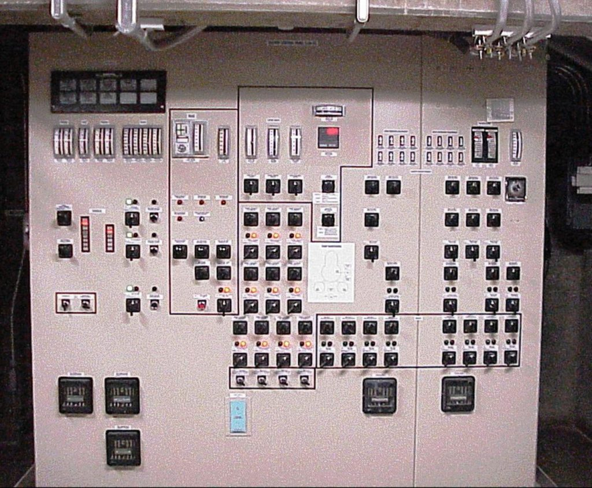
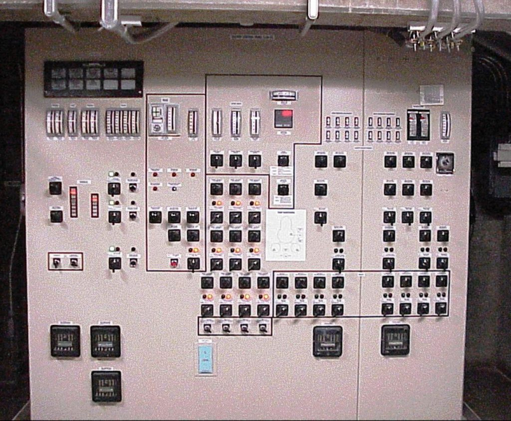

BackUp Power Systems
Nuclear backup power systems are critical components in ensuring the safety and reliability of nuclear power plants. These systems provide essential power to maintain safety functions and control systems in the event of a loss of off-site power or other electrical disturbances. Here’s a detailed overview of nuclear backup power systems, their usage, and other relevant details:
Types of Nuclear Backup Power Systems
1. Emergency Diesel Generators (EDGs)
- Usage:Provide backup power to safety systems, control systems, and critical equipment during a power outage or electrical failure.
- Features: - High Reliability:Designed for high availability and quick start-up to ensure they are ready when needed.
- Automatic Transfer:Equipped with automatic transfer switches (ATS) that activate the generators when off-site power is lost.
- Multiple Units:Typically, multiple generators are installed to provide redundancy and ensure that at least one unit is always operational.
- Maintenance:Requires regular testing, maintenance, and refueling to ensure reliability.
2. Battery Backup Systems
- Usage:Provide short-term power for essential control systems, instrumentation, and emergency lighting until backup generators can take over.
- Types:- Lead-Acid Batteries: Commonly used for immediate, short-term power needs.
- Lithium-Ion Batteries: Emerging as a more efficient alternative with longer life and better performance.
- Features:Batteries must be regularly tested and maintained to ensure they are fully charged and functional.
3. Uninterruptible Power Supplies (UPS)
- Usage:Offer instantaneous backup power to critical electronics and instrumentation during power disturbances.
- Types:- Static UPS: Provides seamless power transfer with no interruption.
- Rotary UPS: Uses flywheels to provide power during brief outages and protect against voltage sags.
- Features:Often used in conjunction with other backup power systems to ensure uninterrupted power to sensitive equipment.
4. Emergency Power Supply Systems (EPSS)
- Usage:A broader term that can include both diesel generators and battery systems as part of an integrated backup power strategy.
- Features:Designed to ensure continuous power to safety-related systems and equipment, including reactor coolant pumps, emergency cooling systems, and instrumentation.
Usage and Applications
Safety Systems:
- Reactor Core Cooling:Backup power ensures that cooling systems for the reactor core remain operational to prevent overheating.
- Control Systems:Maintains functionality of control systems for safe plant operation and monitoring.
Instrumentation and Monitoring:
- Data Collection:Provides power to systems that monitor reactor conditions and environmental parameters.
- Communication:Ensures that communication systems remain operational for coordination and emergency response.
Critical Equipment:
- Pumps and Valves:Powers systems essential for cooling and maintaining safe reactor conditions.
- Emergency Lighting:Provides lighting in key areas to ensure safe operations and evacuations during outages.
Maintenance and Testing
Regular Testing:
- Generators:Include periodic load testing, start-up tests, and maintenance checks to ensure they will operate correctly when needed.
- Batteries and UPS:Routine checks and performance tests to verify functionality and battery health.
Preventive Maintenance:
- Fuel Management:Regular refueling of diesel generators and checking fuel quality.
- Component Inspection:Regular inspection of electrical components, connections, and mechanical parts.
Training and Drills:
- Operator Training:Ensuring operators are trained in backup power system operations and emergency procedures.
- Drills:Conducting regular drills to test response times and system readiness during simulated power failures.
Regulatory and Safety Aspects
Compliance:
- Nuclear Regulatory Requirements:Backup power systems must meet stringent requirements set by regulatory bodies such as the Nuclear Regulatory Commission (NRC) in the U.S. or equivalent authorities in other countries.
- Standards:Must comply with industry standards for reliability, safety, and performance.
Documentation and Reporting:
- Records:Maintenance, testing, and operational records must be meticulously documented for regulatory reviews and audits.
Importance
Nuclear backup power systems are vital for the safe and reliable operation of nuclear power plants. They ensure that safety systems and critical equipment remain operational during power disruptions, preventing potential accidents and ensuring the protection of plant personnel and the public.